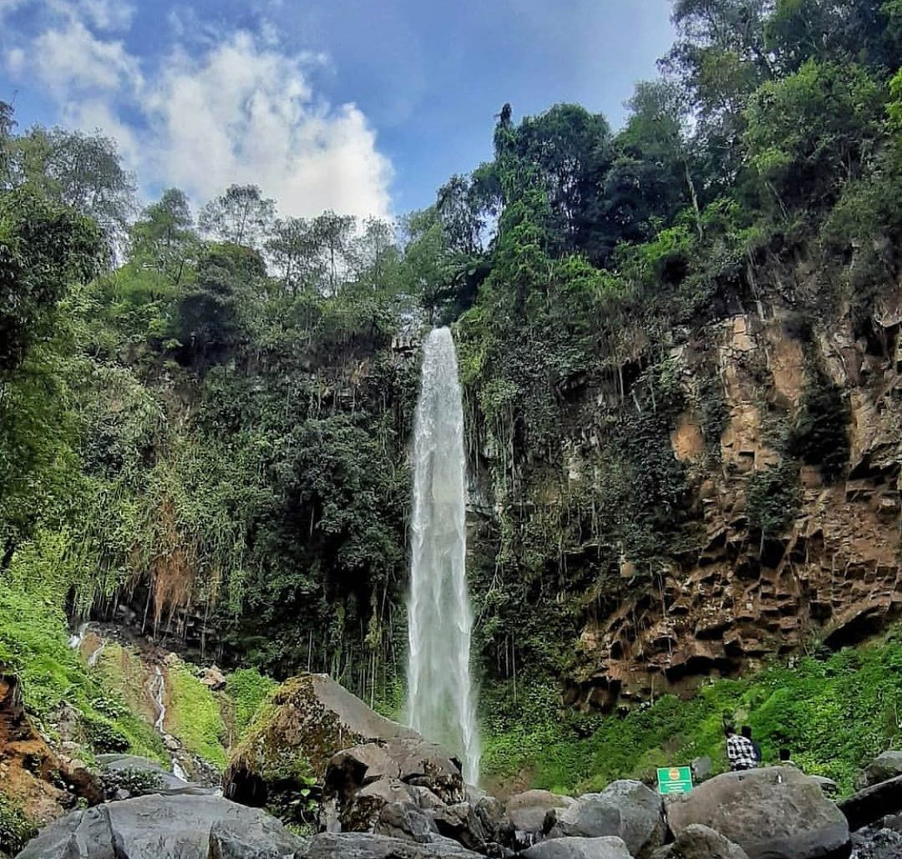

Surga yang hilang di lereng Gunung Lawu. Dijuluki “surga yang hilang” karena air terjun ini tersembunyi di antara semak belukar dan pepohonan hijau nan rimbun. Air Terjun Jumog berlokasi Plesungan, Gandu, Berjo, Ngargoyoso. Suara gemericik air, pepohonan yang meneduhkan, aliran air yang menyegarkan, dan udara sejuk pegunungan benar-benar sempurna untuk relaksasi tubuh dan pikiran. Kamu bisa mendapatkan semuanya jika berkunjung ke Air Terjun Jumog.
Berada di lereng Gunung Lawu, air terjun setinggi 30m ini bukan hanya indah dipandang, namun juga bisa langsung kamu rasakan kesegarannya dengan bermain di sungai yang mengalir di bawahnya. Eksotisme Air Terjun Jumog juga sangat sayang jika tidak diabadikan dengan berfoto. Kamu bisa berpose di atas jembatan dengan latar belakang air terjun yang indah atau berdiri di atas bebatuan untuk mendapatkan hasil foto yang lebih atraktif. Untuk tiket masuk di Air Terjun Jumog sebesar Rp 5 ribu dan jam operasional buka setiap hari mulai pukul 08.00 - 16.30 WIB

Hanya butuh waktu satu jam berkendara dari Kota Solo, kamu sudah bisa sampai di gerbang indah menuju langit ke tujuh. Sekilas, gapura ini mirip dengan Pura Lempuyangan yang berada di Pulau Dewata. Namun nyatanya, ini adalah gapura Candi Cetho yang lokasinya berada di Cetho, Gumeng, Jenawi. Banyak turis berfoto di gapura ini dengan latar belakang berhiaskan langit biru dengan awan putih.
Jadi, enggak salah kan kalau gapura ini disebut gerbang menuju langit ke tujuh? Tapi kalau kamu ingin mendapatkan foto yang lebih eksotis, coba saja datang saat senja menjelang. Warna langit yang dihiasi semburat warna jingga dari mentari yang tenggelam akan menambah kesan magis pada foto kamu. Perjalanan kamu ke sini, pastinya enggak cuma sampai di gapura saja. Bangunan utama Candi Cetho juga tak kalah menarik. Untuk tiket masuk di Candi Cetho sebesar Rp 17 ribu dan jam operasional buka setiap hari mulai pukul 08.00 - 16.30 WIB
Siapa sih yang belum pernah mendengar De Tjolomadoe? Sejak pertama kali dibuka setelah dilakukan pemugaran, bangunan bekas pabrik gula warisan Hindia Belanda (tahun 1861) ini langsung hits di Instagram. De Tjolomadoe berlokasi di Malangjiwan, Colomadu. Setiap sudut bangunan ini memang sangat Instagramable. Kalau butuh stok foto untuk diunggah ke media sosial, tempat ini cocok banget untuk kamu. Mesin-mesin besar yang digunakan untuk memproduksi gula di pabrik ini pada masa lalu, masih bisa kamu temukan di sini. Mesin-mesin tersebut sengaja dipertahankan agar pengunjung tetap bisa merasakan suasana pabrik yang sesungguhnya.
Tak hanya berfungsi sebagai museum interaktif yang edukatif tentang sejarah perkebunan gula di tanah air, di De Tjolomadoe kamu juga bisa menjumpai berbagai spot foto keren: mulai dari ruang duduk untuk bersantai, hingga sebuah ruang khusus yang dalam keadaan gelap akan memendarkan warna-warni neon ala adegan di film Avatar. Untuk tiket masuk di De Tjolomadoe sebesar Rp 40 ribu dan jam operasional buka setiap hari mulai pukul 10.00 - 21.00 WIB (hari senin libur).
Ingin menjauh dari keriuhan kota, silakan langsung melipir ke Karanganyar, tepatnya ke Taman Hutan Rakyat (Tahura) di Sukuh, Berjo, Ngargoyoso, kamu akan merasakan sejuknya alam pegunungan, teduhnya hutan pinus dan ketenangan daerah yang jauh dari hiruk pikuk kota.
Salah satunya adalah memberi makan rusa. Bertemu dengan rusa di tengah hutan, lalu memberinya makan dari tangan kamu secara langsung, dijamin akan menjadi pengalaman yang tak bisa dilupakan. Ada juga wisata berkuda, memanah, area bermain, fasilitas outbound, wisata religi dan banyak lagi lainnya yang pastinya akan menjadikan liburan kamu berkualitas. Untuk tiket masuk di Tahura sebesar Rp 7 ribu dan jam operasional buka setiap hari mulai pukul 10.00 - 18.00 WIB.

Grojogan adalah bahasa Jawa, artinya air terjun dan sèwu berarti seribu. Sehingga Grojogan Sèwu memiliki arti air terjun seribu. Air Terjun Grojogan Sewu berada di Beji, Tawangmangu. Jika kalian berkunjung ke tempat wisata Karanganyar yang satu ini, terdapat dua pilihan lokasi untuk pintu masuknya. Pintu masuk pertama lokasinya cukup dekat dengan Taman Balekambang. Pintu masuk ini terhitung yang paling populer bagi para wisatawan karena dekat juga dengan Terminal Tawangmangu.
Di pintu masuk, kamu bisa melihat pemandang kuda yang berjajar. Meski begitu, kamu harus cukup siap secara fisik untuk lewat pintu masuk ini menuju ke Air Terjun Grojogan Sewu. Pasalnya, kamu harus sedikit mendaki dengan melewati kurang lebih 1200 anak tangga untuk mencapai Air Terjun Grojogan Sewu dari pintu masuk ini. Meski begitu, perjalananmu akan terbayar dengan pemandangan indah di sekitar saat kamu melewati ribuan anak tangga ini. Plus, udaranya sangat segar menyejukkan, banar-benar begitu menentramkan. Tak heran, sebab lokasinya di dataran tinggi lereng gunung Lawu yang merupakan gunung tertinggi ketiga di Jawa Tengah. Sedangkan pintu masuk kedua lokasinya ada di dekat River Hill. Jalur ini lebih direkomendasikan karena cukup landai. Di pintu masuk ini, kamu akan melihat sebuah taman mini yang punya patung ular dan katak. Untuk tiket masuk di Air Terjun Grojogan Sewu sebesar Rp 17 ribu dan jam operasional buka setiap hari mulai pukul 07.30 - 16.30 WIB.
Rumah Atsiri Indonesia berada di Plumbon, Tawangmangu, Karanganyar. Bangunan super luas bergaya industrial modern ini dulunya merupakan pabrik yang memproduksi minyak atsiri berbahan dasar serai wangi atau serai. Namun kini, siapa pun bisa datang ke sini untuk mempelajari lebih lanjut tentang minyak atsiri. Bagi pecinta parfum pasti senang berada di sini. Anda akan diajak berwisata melihat sendiri tanaman penghasil wewangian. Jenisnya bermacam-macam, ada tumbuhan yang langsung tercium wanginya hanya dengan menyentuh daunnya saja, namun ada juga yang hanya mengeluarkan wangi khas jika batang tanamannya diremas.
Walaupun Rumah Atsiri Indonesia ini merupakan tempat wisata edukasi, tapi ada banyak spot menarik untuk berfoto ria lho. Mulai dari hamparan bunga marigold (gemitir) dengan warna kuningnya yang begitu cerah, hingga arsitektur bangunannya yang cukup Instagenic. Fasilitas di sini juga cukup lengkap. Bukan hanya berjalan menyusuri taman, kamu juga bisa menambah wawasan di museumnya, mengisi perut di restorannya dan tentu saja membeli oleh-oleh di toko souvenirnya. Untuk tiket masuk di Rumah Atsiri Indonesia sebesar Rp 50 ribu (berupa voucher yang bisa ditukar dengan kegiatan tur, workshop, makanan, atau souvenir) dan jam operasional buka setiap hari mulai pukul 10.00 - 17.00 WIB.
Gunung Lawu adalah gunung api yang telah lama tidak aktif. Hal bisa dilihat dari rapatnya vegetasi serta puncaknya yang tererosi. Di lerengnya terlihat kepundan kecil yang masih mengeluarkan uap air dan belerang. Gunung yang sering digunakan untuk pendakian ini memiliki tiga puncak, Puncak Hargo Dalem, Hargo Dumiling dan Hargo Dumilah.
Dikabarkan, gunung ini banyak misteri pada tiap-tiap puncak utamanya. Pendakian di gunung ini dapat dimulai dari tiga basecamp. Cemorokandang di Tawangmangu. Candi Cetho di Karanganyar, Jawa Tengah. Cemorosewu, di Sarangan, Jawa Timur. Rute yang baklaan kalian hadapi ini cukup komplit. Mulai dari medan yang landai hingga curam. Alamatnya di Perbatasan Provinsi Jawa Tengah dan Jawa Timur. Kalian tak perlu bayar untuk mearasakan sensasi keindahan wisata ini
Telaga Madirda adalah destinasi wisata dengan telaga alami yang berada di kaki Gunung Lawu. Telaga ini keberadaanya masih cukup tersembunyi dan terpelosok, tepatnya di desa Berjo, Ngargoyoso. Meskipun demikian, tempat wisata Karanganyar yang satu ini kerap kali di kunjungi oleh para wisatawan sebab panoramanya yang begitu memukau dan menarik perhatian banyak orang. Ditambah kondisi alam di sekitarnya masih bagitu asri dan sangat alami dengan vegetasi khas lereng gunung di daerah tropis.
Pemandangan pohon tinggi serta semak-semak banyak tumbuh di tepian telaga dan lereng perbukitan, dijamin bakalan buat mata kalian terperanjat. Kerennya, di telaga ini terdapat beberapa sumber air yang masih alami dan belum terkontaminasi. Untuk tiket masuk di telaga madirda sebesar Rp 10 ribu dan jam operasional buka setiap hari mulai pukul 08.00 - 17.00 WIB.